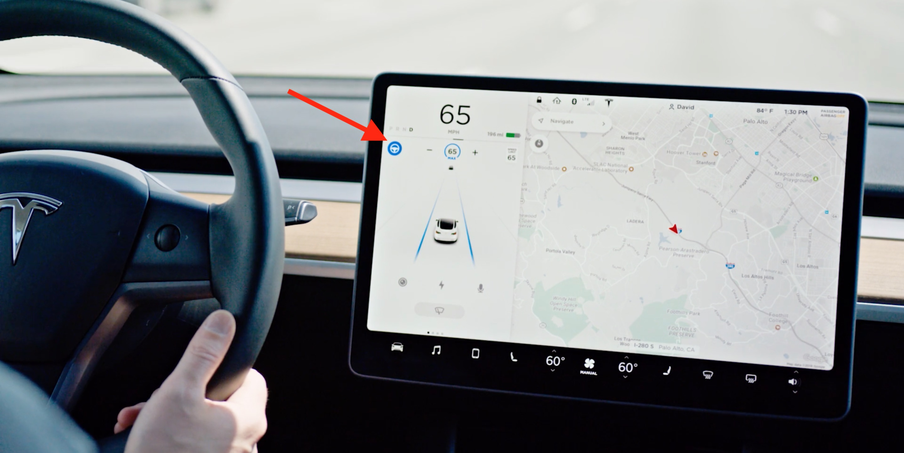

Software:

Screen
The rear touchscreen provides rear passengers with access to:
1. Temperature: Touch the arrows to decrease/increase cabin
temperature.
Note:
You can also use the front touchscreen to adjust climate settings in the
rear cabin.
2. Power: Touch to turn the rear climate control system on or off.
3. Rear fan: Touch to turn the rear fan on or off, to adjust fan speed and
control the direction of air flow from the rear vents.
4. Seat heaters: Control rear seat heaters.
5. Media: Play, pause, skip or rewind through the currently playing song.
6. Video: Access video streaming services.
7. Auto: If Auto is enabled and a passenger is detected, the set
temperature is maintained for the rear cabin.
Tesla has updated the Model S and Model X with a new motorized swivel
function for the center screen. The feature enables a better viewing
experience in the car as the automaker is betting on more in-car
entertainment.
Over the last few years, Tesla has been putting a lot of efforts into
entertainment inside its vehicles. From Tesla Theater for streaming
services to video games, there have been a lot of software updates to
bring new features to entertain inside its electric vehicles.
The automaker is even doing some hardware design around entertainment.
That has become evident with the refreshed Model S and Model X. Tesla's
two flagship vehicles got a new large horizontal center display that is
better suited for watching videos and a new backseat display powered by a
gaming computer.
Traffic-Aware Cruise Control
To engage Traffic-Aware Cruise Control in Model S and Model X, pull down
once on the cruise control stalk on the left of the steering column. In
Model 3 and Model Y, pull down once on the gear selector stalk on the
right of the steering column.
Autosteer
To engage Autosteer in Model S and Model X, pull towards you twice on the
cruise control stalk on the left of the steering column. In Model 3 and
Model Y, pull down twice on the gear selector stalk on the right of the
steering column. A grey steering wheel icon will appear on your display,
next to the speedometer, when the system is available to engage. A blue
steering wheel icon will appear on your display, next to the speedometer,
when Autosteer is engaged.
When Autosteer is in use, it measures the amount of torque that you apply
to the steering wheel and, if insufficient torque is applied, an
escalating series of audible and visual alerts again reminds you to place
your hands on the wheel. This helps ensure you are attentive and trains
good driving habits. If you repeatedly ignore these warnings, then you
will be locked out from using Autopilot for the duration of that trip.
Navigate on Autopilot
Navigate on Autopilot is designed to get you to your destination more
efficiently by actively guiding your car from on-ramp to off-ramp,
including suggesting and making lane changes, navigating highway
interchanges, and taking exits. It's designed to make finding and
following the most efficient path to your destination even easier on the
highway when Autopilot is in use.
To engage this feature, you must first enable Autosteer by going to
Controls Autopilot Autosteer - then enable the Navigate on Autopilot
feature. Camera calibration will be required and the latest version of
Navigation maps must be downloaded via Wi-Fi.
For each route where Navigate on Autopilot is available, you will have the
option to activate it by pressing the NAVIGATE ON AUTOPILOT button located
in your Navigation Turn List. You can also activate Navigate on Autopilot
automatically any time a destination is entered and Autopilot is engaged
by adjusting your Navigate on Autopilot settings from Controls Autopilot
Customize Navigate on Autopilot.
On Model 3 and Model Y, Navigate on Autopilot can be engaged on most
highways by moving the gear lever twice downwards, in quick succession. On
Model S and Model X built between 2012-2021, Navigate on Autopilot can be
engaged on most highways by pulling the cruise stalk toward you, twice in
quick succession.
Auto Lane Change
To initiate an automated lane change, you must first enable Auto Lane
Changes through the Autopilot Controls menu within the Settings tab. Then
when the car is in Autosteer, a driver must engage the turn signal in the
direction that they would like to move. In some markets depending on local
regulations, lane change confirmation can be turned off by accessing
Controls Autopilot Customize Navigate on Autopilot and toggle 'Lane Change
Confirmation' off.
Autopark
If your car sees a parking spot, a grey 'P' icon will appear on the left
or right hand side of your instrument panel, depending on the location of
the space. Autopark detects parallel parking locations when driving below
15mph and perpendicular parking locations when driving below 10mph. To use
Autopark at that time, press on the brake and shift the gear selector into
'Reverse.' Keep your foot on the brake. 'Start Autopark' will appear in
blue text on your touchscreen - press this to start the feature and
release the brake and steering wheel. Autopark will then begin to maneuver
the vehicle into the parking space by controlling your cars speed, gear
changes and steering angle, but you should remember to be alert and
monitor the backup camera view to check for obstacles.
Once Autopark is complete, the car will let you know it is complete and
shift into 'Park.' You can override Autopark at any time by taking control
of the steering wheel.
Summon
To use Summon, open the Tesla app. Press Summon and then press the forward
or reverse buttons. Model S and Model X owners can use Summon with their
key fob by holding the center of the key fob for three seconds until the
car's hazard lights come on, and then pressing either the frunk or trunk
button on key fob to Summon forwards and backwards respectively. Summon
also integrates with HomeLink and will open your garage door to pull your
car out of the garage.
Smart Summon
Smart Summon is designed to allow your car to drive to you or a location
of your choosing, maneuvering around and stopping for objects as
necessary. Like Summon, Smart Summon is only intended for use in private
parking lots and driveways. You are still responsible for your car and
must monitor it and its surroundings at all times and be within your line
of sight because it may not detect all obstacles. Be especially careful
around quick moving people, bicycles and cars.
To use Smart Summon, open your Tesla app, tap Summon and then select the
Smart Summon icon. To activate the feature, press and hold the COME TO ME
button. Alternatively, tap the target icon, set the target destination of
your choice by adjusting the map, and then press and hold the GO TO TARGET
button. You can stop your car from driving at any time by releasing the
button.
Smart Summon works with your Tesla app and your phone's GPS to operate.
You must be within approximately 200 feet of your car to use. Smart Summon
requires the latest version of the Tesla mobile app (3.10.0 or later).
Please refer to the Owner's Manual for additional details about this
feature.